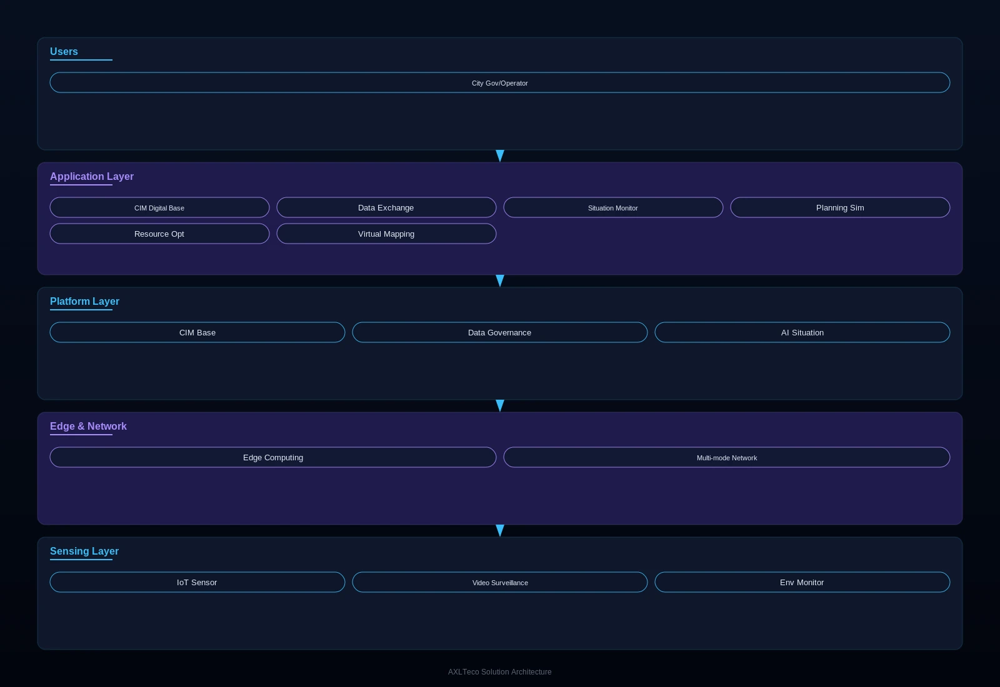

For city governments and operations management authorities, a city-level intelligent governance solution built on a CIM+BIM+GIS 3D digital base that addresses the core pain points of severe data silos, unclear operational status and suboptimal public resource allocation, supporting refined urban governance and sustainable development.
Solution Overview
Provides city governments and operations management authorities with city-level intelligent governance solutions built on a CIM+BIM+GIS 3D digital base, addressing severe data silos, unclear operational awareness and suboptimal public resource allocation, and supporting refined governance and sustainable development.
Applicable to: City governments, urban operations management centers, traffic management departments, municipal departments.
- Digital twin technology maps the city between physical and virtual spaces, allowing planning schemes to be rehearsed virtually
- The platform scales elastically, supporting phased construction from a single block to the whole city
- Data-driven optimization of public resource allocation improves citizens' quality of life
Benefits: Higher refined governance, more efficient government services, optimized public resource allocation, and better quality of life for citizens.
Business Challenges
In urban governance, customers often face severe data silos, unclear operational status and decisions without data support, and urgently need an intelligent governance platform with a unified digital base, city-wide sensing and data-driven operation.
Severe data silos
Government affairs, traffic, environment and energy data sit in separate departments and cannot be shared.
Unclear operational status
No unified view of city operations; problems are found by experience and handled manually.
Suboptimal public resources
Traffic, energy and public services are allocated without data, mismatching supply and demand.
High planning risk
Major urban projects lack rehearsal and verification, raising construction risk and decision cost.
3D digital base
A CIM+BIM+GIS city information model base is needed.
Multi-source data convergence
Government, IoT and internet data need governance and shared exchange.
Typical Scenarios:
Target Roles: City administrators, traffic engineers, environment staff, emergency commanders.
Solution Architecture
Built on a three-layer “city sensing network - data platform - intelligent applications” architecture with a City Information Model (CIM) digital base, covering IoT sensing, data governance and AI situational analytics, and supporting multi-domain data integration and elastic scaling across traffic, environment, municipal services and security.

Sensors cover roads, bridges, utilities and parks; edge nodes preprocess data locally; the platform converges government, IoT and internet data; applications support situational analysis and planning rehearsal on the 3D digital base.
Core Modules
CIM digital base
CIM+BIM+GIS fused modeling maps the city between physical and virtual spaces.
Data sharing & exchange
Multi-source data converged, governed and shared across departments.
Operational monitoring
AI analytics of city operations with automatic anomaly alerts.
Planning rehearsal
Major plans rehearsed in virtual space to lower construction risk.
Resource optimization
Data-driven matching of traffic, energy and public service supply and demand.
Integration Capabilities:
- Integrates data across traffic, environment, municipal services, security and more
- Digital twin rehearses urban planning schemes
- Elastic scaling from a single block to the whole city
Advantages & Delivery
With digital twin technology and city-level project experience, we support more refined governance and better public resource allocation, delivered through digital base construction, sensing network deployment, platform buildout and long-term operations partnership.
Differentiating Advantages
Virtual-physical mapping & rehearsal
Plans rehearsed virtually to reduce construction risk.
Elastic tiered construction
Build from a single block up to the whole city.
Data-driven decisions
Public resource allocation grounded in data, reducing supply-demand mismatch.
City-level experience
Active participation in African urban digitalization, accumulating city-level project experience.
Customer Value: More refined governance, more efficient government services, optimized public resources and better quality of life — advancing one-network government services and one-network unified city operations.
Implementation Process
Requirements research
Define governance scenarios, data resources and construction scope.
Digital base construction
Build the CIM+BIM+GIS 3D digital base.
Sensing network deployment
Deploy IoT sensors, video and environment monitoring.
Data platform buildout
Converge, govern and share multi-source data.
Intelligent applications
Develop situational monitoring and rehearsal applications by scenario.
Training & handover
Train city operations and management staff.
Service Assurance: Long-term operations partnership, continuous platform iteration, data security assurance.
Customer Cases
The following projects built the intelligent infrastructure foundations from which city-level implementation experience was accumulated.
Smart Traffic, Security Surveillance & Low-Voltage Infrastructure in Lagos and Other Cities
Background: Lagos and other African cities are accelerating digitalization, with concentrated needs in traffic, security and low-voltage infrastructure.
Challenge: Urban congestion, public safety control and infrastructure intelligence all needed systematic improvement.
Solution: Participated in the construction of smart traffic, security surveillance and low-voltage intelligent infrastructure.
Results: Rich city-level project implementation experience accumulated, laying the ground for further smart city delivery.